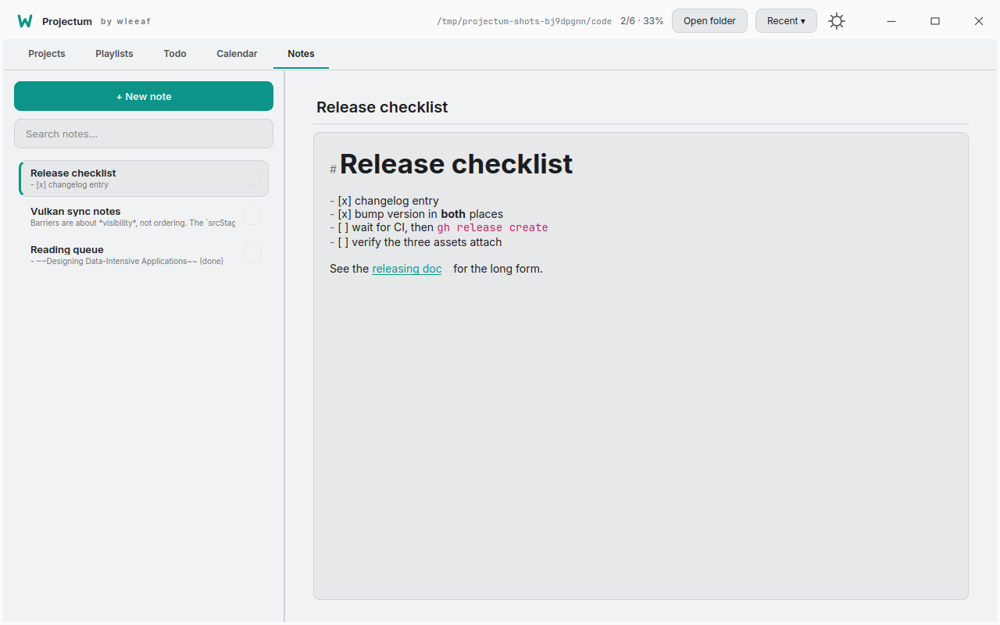
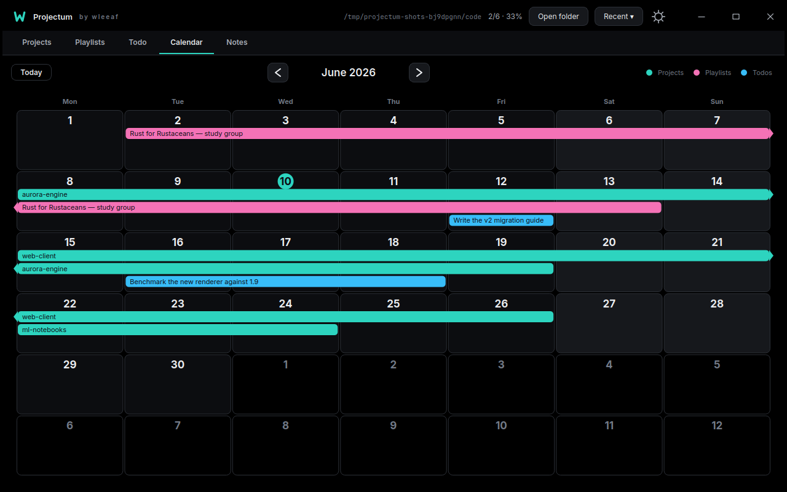
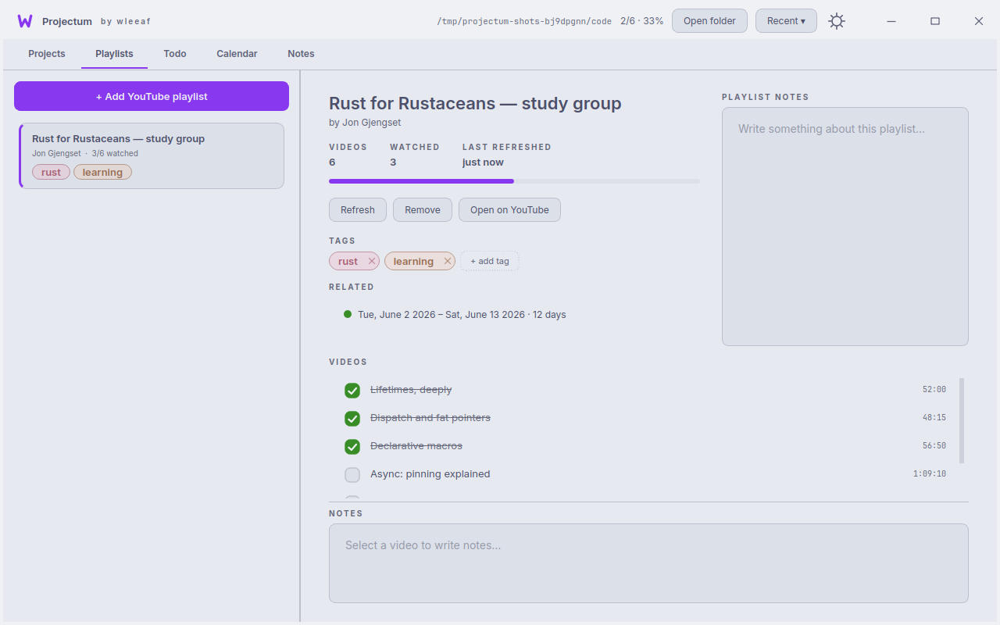

Point it at a folder. Done.
Every subfolder becomes a project — with its size, last-modified time, and git branch read live off a background thread. Mark things done or tested, tag and pin them, write notes in Markdown that renders as you type.
- syntax markers hide until your cursor enters the phrase
- command palette over everything —
Ctrl+K - open in your editor, terminal, or file manager


Link anything to anything.
A project to a playlist. A todo to next Tuesday. A note to a span of days. Links are undirected and untyped — just "these are related," the way you actually keep track of work — and the calendar is where the date side of the graph comes together.
Playlists are projects too.
Paste a YouTube playlist URL and Projectum pulls titles and durations
with yt-dlp. Tick videos off as you watch, keep per-video notes,
refresh without losing your state — and schedule the whole thing on the calendar.
